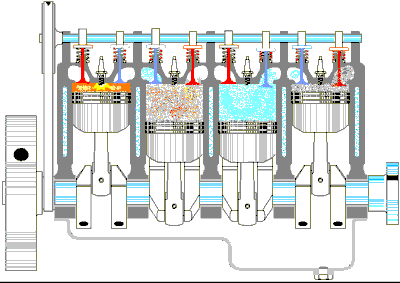

Os Motores aspirados são motores que "respiram" sozinhos, como o cilíndro aonde o pistão fica é selado, quando ele se movimenta ele acaba fazendo uma sucção de ar, admitindo o ar de forma natural sem ajuda externa.
A preparação para um motor aspirado é mais limitada, porque o motor na maioria das vezes já vem de fábrica com um mapa que aproveita todo o poder do motor
Obs: Exemplo do funcionamento de um motor aspirado
| Motor | Som |
|---|---|
| V8 Aspirado |